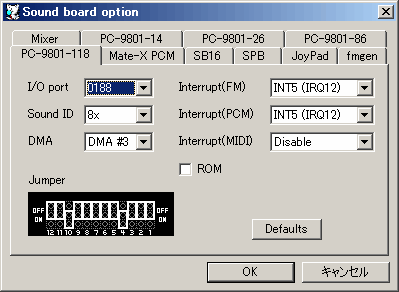

PC-9801-118のポートを設定します。
PC-9801-118のサウンドIDを設定します。
PC-9801-118のDMAチャネルを設定します。1チャネルのみサポートしています。
FM音源の割り込み番号を設定します。PCM割り込みと重複可能。
PCM音源(Windows Sound System, CS4231)の割り込み番号を設定します。FM割り込みと重複可能。
MIDIの割り込み番号を設定します。
チェックをすると隠しサウンドＲＯＭを使用します。
PC-9801-118の設定を工場出荷状態に戻します。
PC-9801-118ボード上のジャンパです。